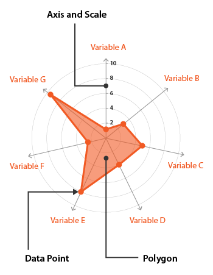

Statistical Graphs
1.Bar Chart
A bar chart is a graph with rectangular bars. The graph usually compares different
categories. Although the graphs can be plotted vertically (bars standing up) or horizontally (bars laying flat
from left to right), the most usual type of bar graph is vertical.
The horizontal (x) axis represents the categories; The vertical (y) axis represents a value for those categories.
In the graph below, the values are percentages.
A bar graph is useful for looking at a set of data and making comparisons.
2.Horizantal Bar Chart
A horizontal bar chart is a graph in the form of rectangular bars. It’s a data visualization
technique.
The length of these bars is proportional to the values they represent. The bar chart title indicates which data is
represented. The vertical axis represents the categories being compared, while the horizontal axis represents a
value.
This type of chart provides a visual representation of categorical data. This data is grouped together as a group.
Examples include months of the year, age range, shoe size, or animal species.
3.Doughnut Chart
A doughnut (or donut) chart is a pie chart with a "hole" - a blank circular area in the
center. The chart is divided into parts that show the percentage each value contributes to a total.
Like the regular pie chart, the doughnut chart is used with small sets of data to compare categories. It drives
attention from the area taken by each part to emphasize the length of arcs. The blank space also allows displaying
some additional information in the center: for example, labels, the name of a selected category, or the chart
title.
4.Pie Chart
Extensively used in presentations and offices, Pie Charts help show proportions and
percentages between categories, by dividing a circle into proportional segments. Each arc length represents a
proportion of each category, while the full circle represents the total sum of all the data, equal to 100%.
Pie Charts are ideal for giving the reader a quick idea of the proportional distribution of the data. However the
major downsides to pie charts are:
They cannot show more than a few values, because as the number of values shown increases, the size of each
segment/slice becomes smaller. This makes them unsuitable for large amounts of data.
5.Line Chart

A line chart is a type of chart that displays information as a series of data points
connected by straight line segments.
A line chart is a way of visually representing an asset's price history using a single, continuous line.
A line chart is easy to understand and simple in form, typically only depicting only changes in an asset's closing
price over time.
Because line charts usually only show closing prices, they reduce noise from less critical times in the trading
day, such as the open, high, and low prices.
Because of its simplicity, however, traders looking to identify patterns or trends may opt for chart types with
more information, such as a candlestick.
6.Radar Chart

Radar Charts are a way of comparing multiple quantitative variables. This makes them useful
for seeing which variables have similar values or if there are any outliers amongst each variable. Radar Charts
are also useful for seeing which variables are scoring high or low within a dataset, making them ideal for
displaying performance.
Each variable is provided with an axis that starts from the centre. All axes are arranged radially, with equal
distances between each other, while maintaining the same scale between all axes. Grid lines that connect from
axis-to-axis are often used as a guide. Each variable value is plotted along its individual axis and all the
variables in a dataset and connected together to form a polygon.